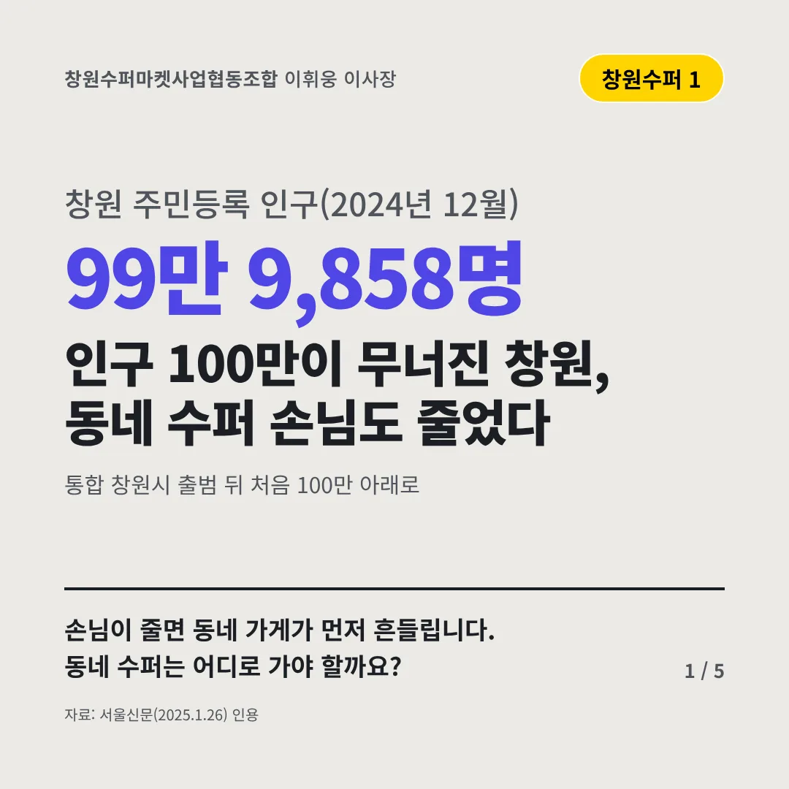
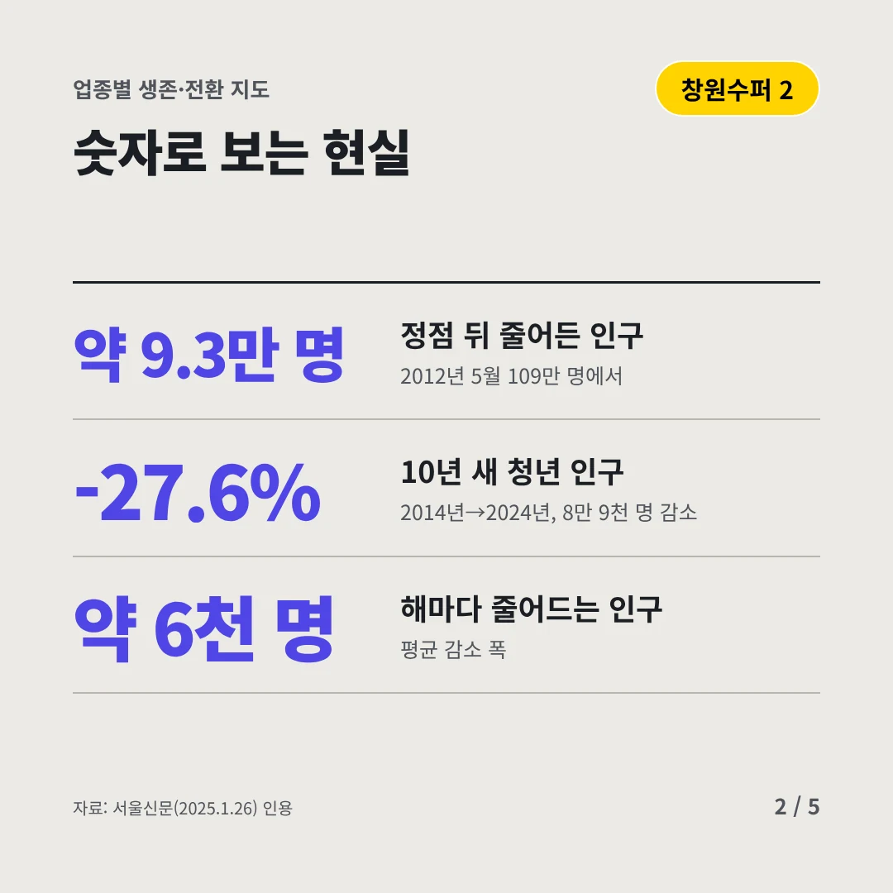
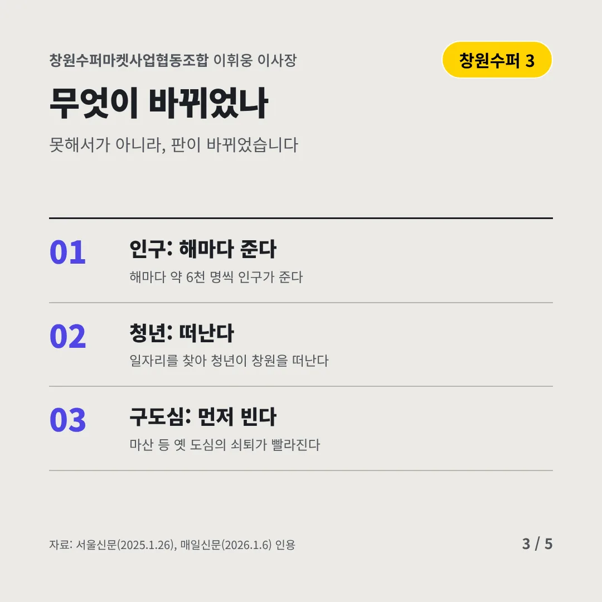
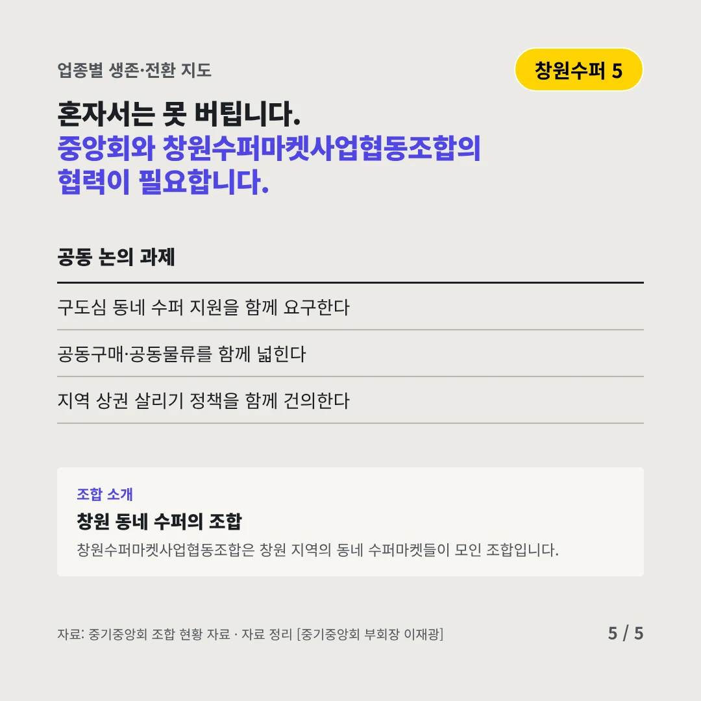
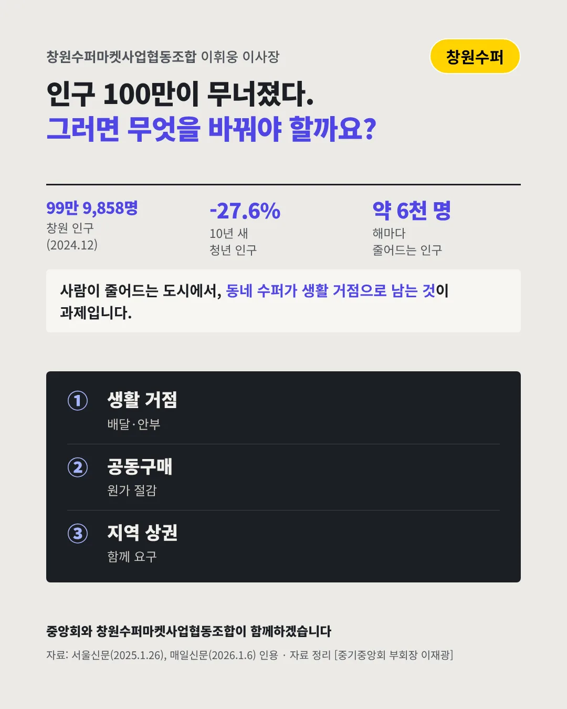

창원수퍼마켓사업협동조합
인구 100만이 무너진 창원, 동네 수퍼 손님도 줄었다
99만 9,858명 창원 주민등록 인구(2024년 12월)





손님이 줄면 동네 가게가 먼저 흔들립니다. 동네 수퍼는 어디로 가야 할까요?
숫자로 보는 현실
- 약 9.3만 명정점 뒤 줄어든 인구2012년 5월 109만 명에서
- -27.6%10년 새 청년 인구2014년→2024년, 8만 9천 명 감소
- 약 6천 명해마다 줄어드는 인구평균 감소 폭
무엇이 바뀌었나
- 인구: 해마다 준다해마다 약 6천 명씩 인구가 준다
- 청년: 떠난다일자리를 찾아 청년이 창원을 떠난다
- 구도심: 먼저 빈다마산 등 옛 도심의 쇠퇴가 빨라진다
그래도 길은 있다
- 생활 거점으로동네 수퍼가 배달·안부 확인을 맡는다
- 함께 사서 싸게공동구매로 원가를 낮춘다
- 지역과 함께특례시 유지·상권 지원을 함께 요구한다
한 장 요약

조합 소개
창원수퍼마켓사업협동조합은 창원 지역의 동네 수퍼마켓들이 모인 조합입니다.
자료: 서울신문(2025.1.26), 매일신문(2026.1.6)